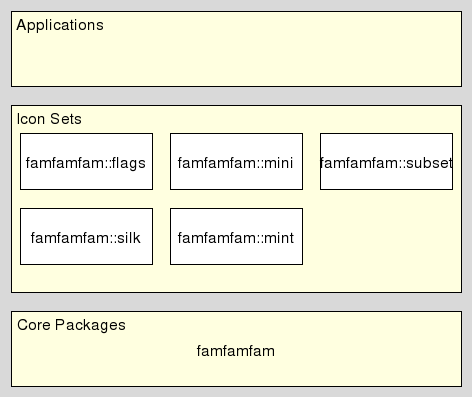
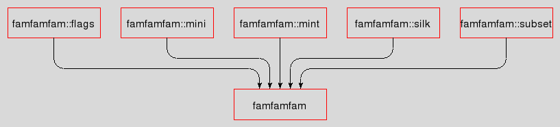

famfamfam_devguide - FamFamFam - The Developer's Guide
Welcome to famfamfam, a set of packages providing access to the same-named icon sets created by Mark James, at http://www.famfamfam.com/lab/icons/
This document is a guide for developers working on FamFamFam, i.e. maintainers fixing bugs, extending the package's functionality, etc.
Please read
first, if that was not done already. Here we assume that the sources are already available in a directory of your choice, and that you not only know how to build and install them, but also have all the necessary requisites to actually do so. The guide to the sources in particular also explains which source code management system is used, where to find it, how to set it up, etc.
We currently do not have demo applications.
This set of packages doesn't have much of an architecture and no special concepts.
We have a single internal package which provides a command for the declaration of icon sets and generates an API from the specified arguments for the new icon set.
On top of that we have the packages for the icon sets just declaring themselves, i.e. using this internal package to do the heavy lifting.

The icons are accessed by name and are returned in the form of a Tk photo image. The images are generated lazily, i.e. on demand and then cached.
This directory contains the documentation sources. The texts are written in doctools format, whereas any figures are done with tklib's dia(gram) package and application.
This directory contains the documentation converted to regular manpages (nroff) and HTML. It is called embedded because these files, while derived, are part of the fossil repository, i.e. embedded into it. This enables fossil to access and display these files when serving the repositories' web interface. The "Command Reference" link at http://chiselapp.com/user/andreas_kupries/repository/famfamfam/home is, for example, accessing the generated HTML.
We have one ".tcl" file per package, internal and icon sets. The icon set packages additionally each have a directory named like their file, but without the extension ".tcl", containing the actual image files of the icons.

This document, and the package it describes, will undoubtedly contain bugs and other problems. Please report such at the FamFamFam Tcl Tracker. Please also report any ideas for enhancements you may have for either package and/or documentation.
Icon sets
Copyright © 2012 Andreas Kupries <andreas_kupries@users.sourceforge.net>
Copyright © 2012 Documentation, Andreas Kupries